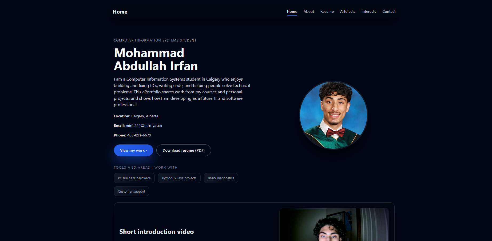
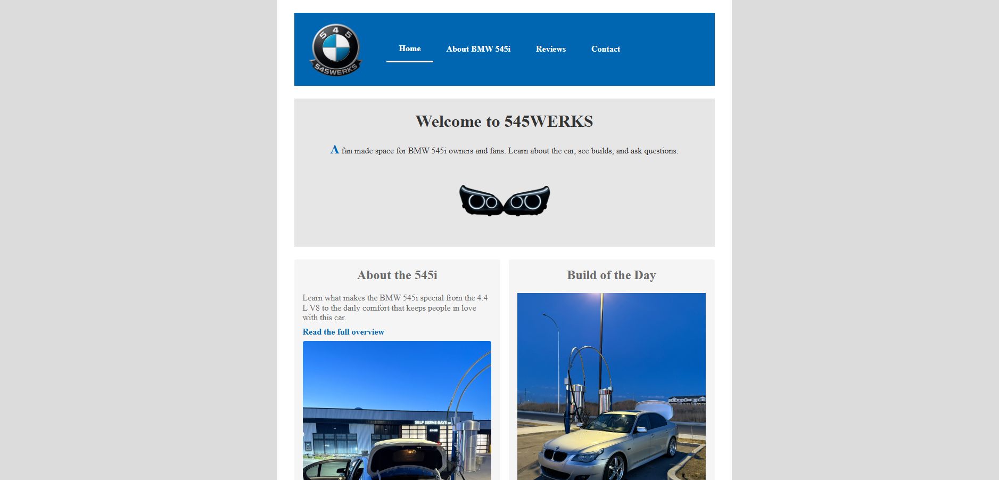
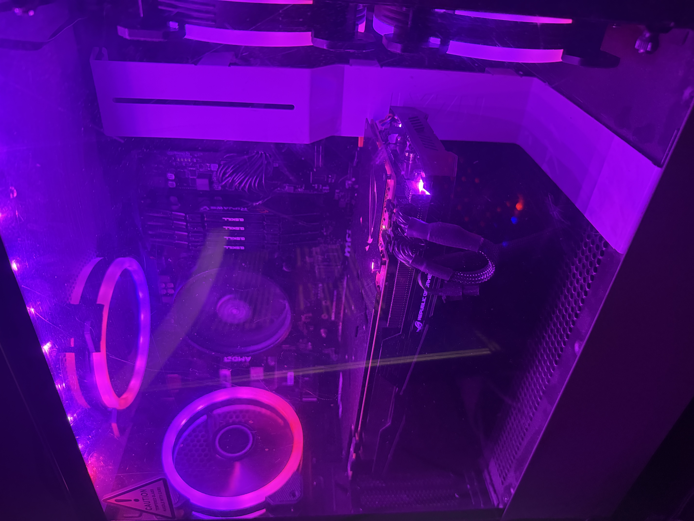

Artefact 1: This ePortfolio

This ePortfolio is the major project for my COMP 2511 class, and it pushed me to think about web development in a much more intentional way. The goal was to build a complete multi-page website that is responsive, accessible, and structured with proper semantic HTML. I wanted it to feel professional, but also feel like me, so I designed a layout with a strong hero section, card-style content areas, and clean navigation that stays consistent across every page.
One of the biggest things I learned was how important planning is. At first my CSS got messy because I tried to style everything at once. Instead of forcing it, I stepped back, planned the layout properly, and then separated my styles into page-specific CSS files. That instantly made things easier to manage and helped me understand how real developers keep large projects organized. I used both grid and flexbox to shape the layout and added breakpoints so the site adjusts smoothly on mobile, medium screens, and desktops.
What I enjoyed most was building something that actually represents my interests, skills, and the direction I want to grow professionally. This project wasn’t just about meeting rubric requirements. It gave me a chance to build a site that has personality and shows my passion for tech, cars, and continuous improvement.
Artefact 2: Web Layout Assignment

In Assignment 1 I built a small fan site for my own BMW 545i, mostly because I wanted a chance to showcase my car that I built by myself. For Assignment 2 I took that project and rebuilt it into a much more polished version called 545WERKS. This time the focus was on responsive design, so I added the required breakpoints at 590px and 790px, created a 2×2 grid layout for medium screens, and used a centered fixed-width layout for large screens. On mobile it collapses into a clean single column. Seeing the layout shift smoothly across devices was one of the most satisfying parts of the project.
I reorganized the entire site using proper semantic HTML, which instantly made it feel more professional and easier to follow. I moved all the pages into the right folders, cleaned up my headings, and applied normalize.css to keep the styling consistent in different browsers. These changes fixed a lot of problems I had in Assignment 1 and helped me understand why structure matters so much when a project gets bigger.
Accessibility became the part I learned the most from. I added alt text that actually describes the images, improved colour contrast, and made sure every form field has a proper label. I grouped radio buttons with <fieldset> and <legend> and added keyboard-visible focus states so the site works for people who don't use a mouse. Running the WAVE tool showed me issues I didn’t even notice the first time, and fixing them made the site feel much more complete. This assignment helped me improve my web-design skills by making it accessible to everyone no matter what device they may be using.
Artefact 3: BMW 5 series Valvetronic coding fix

This artefact comes from a real problem I had with my BMW 5 Series when it started running poorly after I replaced my coolant transfer pipe along with a few other codes. The car felt weak, kept dropping into limp mode, and wouldn’t respond properly to throttle input. Instead of taking it straight to a shop, I wanted to understand the issue myself. I plugged in an OBD2 scanner and started looking through the fault codes, which all pointed toward the Valvetronic system. That’s when I learned the Valvetronic motors hadn’t been coded into the car.
I connected my laptop to the car using my diagnostic cable and opened INPA, which is BMW’s factory-level diagnostic software. I went through the live data, double-checked sensor readings, and confirmed that the ECU wasn’t communicating with the motors the way it was supposed to. After a few hours of research, testing, and a lot of patience, I recoded the modules, cleared adaptations, and reset the system. When I started the engine again and it finally ran smoothly, it was one of the most rewarding moments I’ve had working on a car, especially after replacing the transfer pipe by myself, which is hours of labour.
This artefact matters to me because it shows how I approach technical problems both in cars and in IT, break the issue down, gather information, test different solutions, and keep going until things work the way they should. It reflects my curiosity, my patience, and my interest in learning hands-on through real situations. Fixing this problem on my own made me more confident in diagnostics and reinforced how much I enjoy solving technical challenges.
Artefact 4: PC Build and Diagnostics

I have always been into computers so it was huge for me to want to build a custom gaming pc, I handled everything, choosing the parts, putting the system together, doing the cable management, setting up the BIOS, and installing Windows. It was the first time I built a full system on my own, and it taught me a lot about how the hardware actually works together.
I ran into a few problems overtime with my pc, especially with GPU performance and driver conflicts. Instead of guessing, I researched every issue, tested different fixes, and kept troubleshooting until the system ran smoothly. It took patience, but it showed me how important it is to stay calm and work through problems step-by-step.
This artefact represents the kind of technical mindset I bring to IT support. Building a PC forced me to diagnose real issues, try solutions, verify results, and learn from each step. Those are the same skills users count on when they need help, someone who can listen, identify the problem, and work through it until everything is running the way it should.